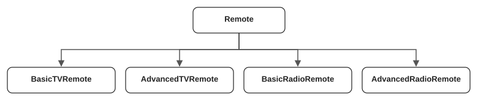
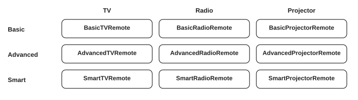
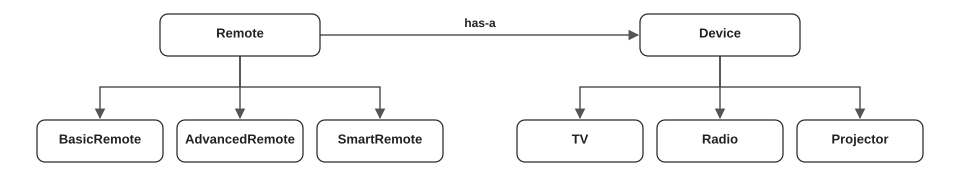
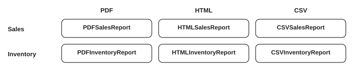
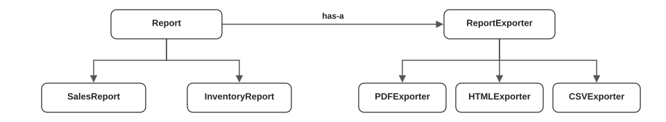
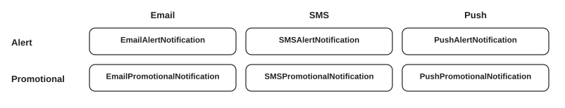

| Abstraction dimension | Implementation dimension |
|---|---|
| Basic/Advanced Remote | TV/Radio/Projector |
| Circle/Rectangle | Vector/Raster Renderer |
| Notification types | Email/SMS/Push channels |
| Report types | PDF/HTML exporters |
| Payment workflows | Payment gateways |
The Bridge is a structural design pattern that separates an abstraction from its implementation so that both can evolve independently without affecting each other.
Instead of binding an abstraction to a single implementation through inheritance, the Bridge places the implementation behind its own interface and holds a reference to it via composition.
The main idea behind the Bridge pattern is to prefer composition over inheritance when two or more dimensions of a system need to vary independently.
This prevents a combinatorial explosion of subclasses when an abstraction can have several dimensions of variation.
The Bridge pattern separates a system into two independent hierarchies:
Instead of connecting these hierarchies through inheritance, the Bridge pattern connects them through composition. The bridge is the reference connecting the two hierarchies.
Important: Here, implementation does not simply mean a concrete subclass. It refers to a separate hierarchy responsible for a particular aspect of behavior.
A simple example is a remote-control system:
Any remote can control any compatible device without creating a separate subclass for every combination.
Consider a remote-control application supporting different devices. Initially, we have two devices, TV and Radio, and two types of remotes, Basic Remote and Advanced Remote.
Without Bridge Pattern (Inheritance Approach), we might create classes like:

Now suppose we introduce a Projector and a Smart Remote. We need classes such as:

This is called the class explosion problem.
How inheritance combinations grow (remote types: 3, device types: 4, total: 12):
Problems with the inheritance approach
Solution: Bridge Pattern.
Instead of creating a separate remote class for every device, we create two independent hierarchies.
New remotes and new devices can be added independently without cross-multiplying classes.

A Remote stores a reference to a Device and delegates device-specific operations to that object.
We can combine them dynamically:
Remote remote1 = new BasicRemote(new TV());
Remote remote2 = new AdvancedRemote(new Radio());
Remote remote3 = new SmartRemote(new Projector());Each hierarchy can now evolve independently.
Create the Implementation Interface. The Device interface defines the operations that all controllable devices support.
public interface Device {
void turnOn();
void turnOff();
void setVolume(int volume);
int getVolume();
}This is the Implementor in the Bridge pattern. It provides the contract that the abstraction hierarchy depends on.
Create Concrete Implementations. TV implementation:
public class TV implements Device {
private int volume = 20;
@Override
public void turnOn() {
System.out.println("TV turned ON");
}
@Override
public void turnOff() {
System.out.println("TV turned OFF");
}
@Override
public void setVolume(int volume) {
this.volume = Math.max(0, Math.min(100, volume));
System.out.println("TV volume: " + this.volume);
}
@Override
public int getVolume() {
return volume;
}
}Radio implementation:
public class Radio implements Device {
private int volume = 10;
@Override
public void turnOn() {
System.out.println("Radio turned ON");
}
@Override
public void turnOff() {
System.out.println("Radio turned OFF");
}
@Override
public void setVolume(int volume) {
this.volume = Math.max(0, Math.min(100, volume));
System.out.println("Radio volume: " + this.volume);
}
@Override
public int getVolume() {
return volume;
}
}Notice that the implementations of the same operations differ from one device to another. The remote does not need to know these details.
Create the Abstraction.
public abstract class Remote {
protected final Device device;
public Remote(Device device) {
this.device = device;
}
public void turnOn() {
device.turnOn();
}
public void turnOff() {
device.turnOff();
}
public abstract void volumeUp();
public abstract void volumeDown();
}The most important part is protected final Device device;. This reference is the bridge between the abstraction and the implementation. Remote does not inherit from TV or Radio. Instead, it contains a Device reference.
Create Refined Abstractions. Basic Remote:
public class BasicRemote extends Remote {
public BasicRemote(Device device) {
super(device);
}
@Override
public void volumeUp() {
device.setVolume(device.getVolume() + 5);
}
@Override
public void volumeDown() {
device.setVolume(device.getVolume() - 5);
}
}Advanced Remote:
public class AdvancedRemote extends Remote {
public AdvancedRemote(Device device) {
super(device);
}
@Override
public void volumeUp() {
device.setVolume(device.getVolume() + 10);
}
@Override
public void volumeDown() {
device.setVolume(device.getVolume() - 10);
}
public void mute() {
device.setVolume(0);
}
}Both remote classes work with any implementation of the Device interface. Notice the distinction:
Device determines how device operations are performed.Remote determines which operations are exposed and how they are combined.Client Code.
void main(String[] args) {
Device tv = new TV();
Device radio = new Radio();
Remote basicRemote = new BasicRemote(tv);
basicRemote.turnOn();
basicRemote.volumeUp();
basicRemote.turnOff();
System.out.println("----------------");
AdvancedRemote advancedRemote = new AdvancedRemote(radio);
advancedRemote.turnOn();
advancedRemote.volumeUp();
advancedRemote.mute();
advancedRemote.turnOff();
}Output:
TV turned ON
TV volume: 25
TV turned OFF
----------------
Radio turned ON
Radio volume: 20
Radio volume: 0
Radio turned OFFWhat happens internally? When the client calls advancedRemote.volumeUp():
AdvancedRemote calculates the new volume.device.setVolume(...).Radio object executes the operation.The remote never needs to know whether the device is a TV, Radio, or Projector. This delegation is the central mechanism of the Bridge pattern.
The Bridge pattern is particularly useful in the following situations.
When a class has two independent dimensions of variation.
| Abstraction dimension | Implementation dimension |
|---|---|
| Basic/Advanced Remote | TV/Radio/Projector |
| Circle/Rectangle | Vector/Raster Renderer |
| Notification types | Email/SMS/Push channels |
| Report types | PDF/HTML exporters |
| Payment workflows | Payment gateways |
If both dimensions evolve independently, Bridge can prevent them from becoming tightly coupled.
When inheritance causes too many subclasses.

Instead, create:

The Report abstraction holds a ReportExporter reference. Adding ExcelExporter would not require a new subclass for every report type.
Case 3: When implementation should be replaceable. Suppose your application initially generates reports as PDFs but later needs HTML output. With Bridge:
Report report = new SalesReport(new PdfExporter());You can configure a different implementation:
Report report = new SalesReport(new HtmlExporter());The high-level report behavior remains unchanged.
Case 4: When you want to isolate platform-specific behavior. Suppose you're building a cross-platform GUI framework. The application exposes high-level components such as Window, Dialog and Button, but their low-level rendering behavior differs across Windows, Linux and macOS.
A Bridge can separate the GUI abstractions from the platform-specific implementation interfaces. This avoids classes such as WindowsDialog, LinuxDialog, MacDialog, WindowsButton, etc. for each combination when their behavior can be delegated cleanly.
Suppose we have a notification system that supports multiple notification types (Alert Notification, Promotional Notification). Each notification can be delivered through different channels: Email, SMS and Push Notification.
Without Bridge, we might create:

Let's solve this with Bridge. Implementation hierarchy:
public interface MessageSender {
void send(String message);
}
public class EmailSender implements MessageSender {
public void send(String message) {
System.out.println("Email: " + message);
}
}
public class SmsSender implements MessageSender {
public void send(String message) {
System.out.println("SMS: " + message);
}
}
public class PushSender implements MessageSender {
public void send(String message) {
System.out.println("Push: " + message);
}
}Abstraction hierarchy:
public abstract class Notification {
protected final MessageSender sender;
protected Notification(MessageSender sender) {
this.sender = sender;
}
public abstract void notifyUser(String message);
}
public class AlertNotification extends Notification {
public AlertNotification(MessageSender sender) {
super(sender);
}
public void notifyUser(String message) {
sender.send("[ALERT] " + message);
}
}
public class PromotionalNotification extends Notification {
public PromotionalNotification(MessageSender sender) {
super(sender);
}
public void notifyUser(String message) {
sender.send("[OFFER] " + message);
}
}Client code:
void main(String[] args) {
Notification alert = new AlertNotification(new EmailSender());
alert.notifyUser("Server CPU is high");
Notification promotion = new PromotionalNotification(new SmsSender());
promotion.notifyUser("50% discount available");
Notification pushAlert = new AlertNotification(new PushSender());
pushAlert.notifyUser("Payment failed");
}Output:
Email: [ALERT] Server CPU is high
SMS: [OFFER] 50% discount available
Push: [ALERT] Payment failedThe system now supports six combinations using only two concrete notification classes and three sender classes.
Adding a new channel, such as WhatsApp, only requires another MessageSender implementation; no changes are necessary to the existing notification classes.
The abstraction delegates operations to the implementor rather than directly implementing all the low-level details.
These patterns can look similar because all three often use interfaces and composition. However, they have different intentions.
| Feature | Bridge | Strategy | Adapter |
|---|---|---|---|
| Main purpose | Separate two independently evolving hierarchies | Make algorithms interchangeable | Make incompatible interfaces work together |
| Main problem | Combinatorial class explosion or coupling | Varying algorithms or behavior | Interface incompatibility |
| Typical relationship | Abstraction → Implementor | Context → Strategy | Client → Adapter → Adaptee |
| Focus | Structural separation | Algorithm selection | Interface conversion |
| Example | Remote + Device | Sorting using different algos | InputStreamReader |
Advantages
Disadvantages
SRP. The abstraction focuses on high-level behavior while concrete implementors focus on implementation-specific operations. For example, AdvancedRemote manages remote-control logic, while TV handles the device's operations.
OCP. We can extend either hierarchy without modifying existing classes, provided the shared contract remains suitable. For example, introducing Projector does not require modifying BasicRemote or AdvancedRemote.
DIP. The high-level abstraction depends on an interface (Device) rather than on concrete classes (TV, Radio).
# Tightly coupled
class Remote {
private TV tv;
}
# Loosely coupled
class Remote {
private Device device;
}Note that simply depending on an interface does not automatically make a design the Bridge pattern. The independent variation of the two hierarchies is essential.
Why is it called the Bridge pattern?
Because an object reference acts as a bridge between two otherwise independent hierarchies: the abstraction and the implementation.
Can Bridge work without abstract classes?
Yes. Both sides can use interfaces or concrete classes. The pattern's essential feature is the separation of variation through composition, not any particular Java keyword.
Does Bridge eliminate inheritance?
No. Inheritance can still be used within each hierarchy. Bridge replaces inheritance between the two varying dimensions with composition.
Can Bridge allow runtime implementation changes?
Yes, if designed for it. In our example, the final Device device reference is fixed after construction. Removing final and providing an appropriate setter would allow switching devices at runtime. The Bridge pattern itself does not require mutable references.
When should Bridge be avoided?
Avoid it when there is only one stable implementation, no independent variation, or when the extra abstraction provides little benefit.
Bridge Design Pattern separates an abstraction from its implementation by introducing two independent hierarchies connected through composition. This allows high-level functionality and low-level implementation details to vary independently without creating a new subclass for every possible combination.
One-line interview definition: Bridge is a structural design pattern that decouples an abstraction from its implementation using composition, allowing both to evolve independently and avoiding combinatorial subclass explosion.
The most important concept is: Bridge is not just about using interfaces or delegation; it's about separating independent dimensions of variation.